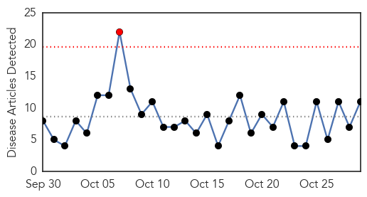
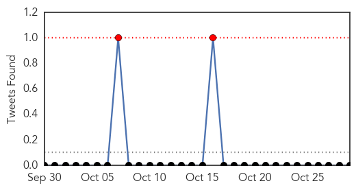
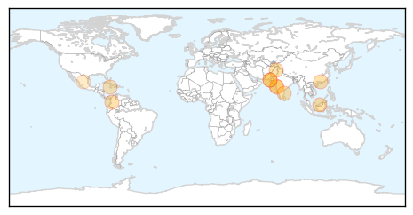

Influenza
30-Day Web Trend
0 alerts, 0 warnings

30-Day Twitter Trend
1 alerts, 0 warnings

Article Locations

Article Confidences
Top Articles:
- 0.999
- Vaccines to fight flu will be late getting here
- 0.999
- Local hospitals unite to remind people to get their flu shot! - Cleveland 19 News
- 0.995
- Focus on Flu campaign: Hospitals, health officials urge residents to get shots
- 0.995
- “The flu can kill:” Milwaukee Health Department hosts FREE flu vaccine clinic for children
- 0.983
- Milwaukee Health Department offers free flu vaccinations Thursday
- 0.967
- Flu vaccine delays cause waiting lists in Kalamazoo County
- 0.947
- Flu shots now available at public health district
- 0.915
- Some clinics seeing delay in getting flu vaccine
- 0.795
- Florida Department of Health in Pinellas County offering free flu vaccine shots on Wednesday - Story
Top Tweets:
-
No tweets found for Oct 29, 2014
Dengue Fever
30-Day Web Trend
1 alerts, 0 warnings

30-Day Twitter Trend
2 alerts, 0 warnings

Article Locations
Article Confidences

Top Articles:
- 0.994
- Another 145 confirmed patients registered in 4 days
- 0.990
- ‘Ordinary’ viral fever lays Mumbai low while dengue occupies the headlines
- 0.981
- Taiwan indigenous dengue fever case count at 7,425 since summer
- 0.978
- Five more dengue cases reported
- 0.978
- CHP investigates three linked imported cases of dengue fever
- 0.966
- Adviser to CM on health visits Rawalpindi to assess measures
- 0.959
- dengue and chinkungunya outbreaks
- 0.944
- Dengue’s down, but not out in Chennai
- 0.885
- PMC seeks ban on rapid dengue test kits
- 0.867
- Jamaica Gets Assistance from Cuba to Boost CHIK-V Response
- 0.639
- Researchers find alternative to vaccine creation
Top Tweets:
-
No tweets found for Oct 29, 2014